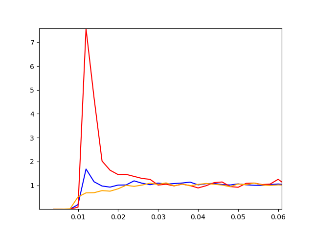

An attempt at modelling the phase separation behaviour of a triphasic system. The organization of the nucleolus, for example, is a result of phase separation of three mutually phase separating components. The simulation, however, doesn't seem to reflect much to the naked eye, the RDF is less hopeless. I reckon the interaction parameters might require a bit more tweaking before the result is as expected.
